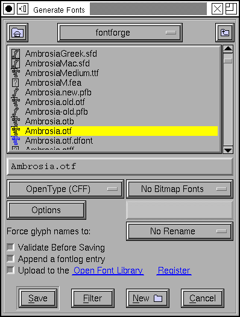
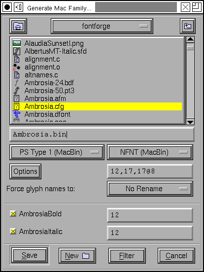

Tutorial #8
- Kreieren eines neuen Schriftsatzes
- Erzeugung eines Bildzeichens (Umrissverfolgung)
- Navigation zu weiteren Bildzeichen
- Auf zum nächsten Bildzeichen (konsistente Richtungen)
- Konsistente Serifen und Stammbreiten
- Erzeugung akzentuierter Bildzeichen
- Erzeugung einer Ligatur
- Untersuchung von Metriken
- Unterschneidung
- Bildzeichenvarianten
- Ankermarkierungen
- Bedingte Eigenschaften
- Überprüfen des Schriftsatzes
- Bitmaps
- Erzeugung
- Schriftsatzfamilien
- Fazit
- Bemerkungen zu verschiedenen Skripten
Überprüfen eines Zeichensatzes
Nach der Erstellung aller Zeichen im Zeichensatz sollte dieser auf Konsistenz überprüft werden. FontForge bietet dafür den Befehl Element->Problem finden mit dem häufig auftretende Probleme gefunden werden können.
Hierzu werden alle Zeichen des Zeichensatzes selektiert und der genannte Befehl ausgeführt. Als Warnung sei hier gesagt, daß nicht alle angezeigten Probleme wirkliche Probleme sein müssen, so könnte es sich um ein Element des Designs handeln, daß von FontForge so nicht erwartet wurde.
Die Funktion bietet die Möglichkeit nach folgenden Problemen zu suchen:
- Stämme, die nahe, aber nicht genau einem Standardwert entsprechen
- Punkte, die nahe, aber nicht genau an einer Standardhöhe liegen
- Pfade, die fast, aber nicht genau vertikal oder horizontal verlaufen
- an unüblichen Stellen plazierte Kontrollpunkte
- Punkte, die fast, aber nicht genau auf einem "Hint" liegen
- ...
Es ist empfehlenswert, schrittweise vorzugehen und in jedem Prüfschritt nur nach gleichgearteten Problemen zu suchen, da eine Vielzahl verschiedenartiger Probleme eher verwirrend ist.
Bitmaps
Optional können Bitmaps mit in den Zeichensatz einbezogen werden.
Dazu wird Element->Bitmaps verfügbar aufgerufen
und die gewünschten Pixelgrößen ausgewählt (unter X und MS Windows
entsprechen Pixelgrößen oftmals nicht exakt den Punktgrößen).
Mit (Fenster->Bitmap öffnen) können die Bitmaps
bereinigt werden, alternativ kann dies mit
einem anderen Editor
geschehen.

Erzeugung des Schriftsatzes
FontForge speichert seine Daten in einem eigenen Dateiformat, welches von anderer Software nicht gelesen werden kann. Für den konkreten Einsatz des Zeichensatzes ist dies natürlich weniger geeignet.
Mit Hilfe von Datei->Generieren wird der Zeichensatz in eines der Standardformate umgewandelt. FontForge bietet eine scheinbar riesige Menge von Formaten an, in Wirklichkeit sind dies nur Varianten einiger weniger Basisformate: PostScript Type 1, TrueType, OpenType (und für CJK Zeichensätze auch CID-keyed Zeichensätze).
Ausserdem gibt es eine Auswahl von Bitmapformaten. FontForge
unterstützt das von X verwendete bdf, mac NFNT, Windows FNT
(Windows 2.0) und die Einbettung in TrueType oder OpenType-Wrapper.
Zeichensatzfamilien
Nach der Generierung eines Zeichensatzes ist es ggf. wünschenswert eine Folge von ähnlichen Zeichensätzen zu generieren, für lateinische, griechische und kyrillische Zeichensätze sind kursive (oder oblique), fette, gestauchte und gestreckte Stile üblich.
Zeichensätze mit unterschiedlichen Stilen in der gleichen Familie sollten den selben Familiennamen haben (im Dialog für Element->Zeichensatzinformation->Namen). Der Zeichensatzname sollte der Familienname mit angehängten Stilnamen sein (oft getrennt durch einen Bindestrich). In der Zeichensatzfamilie "Helvetica" sollten also alle Zeichensätze den Familiennamen "Helvetica" haben. Der reguläre Stil sollte einfach "Helvetica" oder "Helvetica-Regular" genannt werden, the fette Stil "Helvetica-Bold", der oblique (Helvetica besitzt keinen echten Kursivstil) "Helvetica-Oblique", etc.
FontForge kann mit Hilfe des Befehls Element->MetaFont aus einem normalen Font unterschiedliche Stile erzeugen.
Der Befehl Element->Transformieren->Transformieren->Windschief verwandelt einen normalen Zeichensatz in einen oblique. Die Erzeugung eines echten Kursivzeichensatzes ist ein wenig komplexer, so ändert sich die Form des "a" dramatisch ("a"), das "f" bekommt einen Absteiger hinzu ("f"), die Serifen in "ilm" werden in "ilm" abgerundet, um nur einige Beispiele aufzuzählen. Nach der Windschiefe-Transformation eines Zeichensatzes sollte ausserdem Element->Extrema hinzufügen aufgerufen werden.
Wenn ein Zeichensatz bereits in fett und regulär vorliegt (und jedes Zeichen die selbe Anzahl von Punkten in der gleichen Reihenfolge hat), kann mit Hilfe von Element->Zeichensatz interpolieren ein "halbfett" Stil erzeugt werden.
TrueType Zeichensätze (und Windows) unterstützen sehr feine Abstufungen der Stammstärke (Mac OS versteht nur regulär und fett). Im Fenster für Element->Zeichensatzinformation->OS/2 kann die Gewichtung auf einen beliebigen Wert zwischen 0 und 999 gesetzt werden (reguläre Stile liegen im allgemeinen zwischen 400 und 500, fett bei 700). Ausserdem unterstützen TrueType-Zeichensätze Bereiche für Breiten (auf dem Mac lediglich gestaucht, regulär and gestreckt).
Windowssysteme können anhand der Namen automatisch ermitteln, welche Zeichensätze zu welchen Familien gehören. Auf dem Mac ist (oder war) die Situaton etwas komplizierter. Es wird eine begrenzte Anzahl von Stilen unterstützt (regulär, kursiv, fett, Umriss, gestaucht, gestreckt und Kombinationen aus diesen) alles andere muß in separaten Familien definiert werden. Hierzu muß eine spezielle Tabelle erzeugt werden (die "FOND") die Verweise auf die verschiedenen Zeichensätze der Familie enthält. Nach dem Öffnen aller Zeichensätze die in einer bestimmten Familie sein sollen (und die entsprechend benannt wurden) wird vom regulären Zeichensatz ausgehend Datei->Generiere Familie aufgerufen. Daraufhin werden alle Zeichensätze aufgelistet, von denen FontForge glaubt, daß sie zur selben Familie wie der aktuelle gehören und bietet die Möglichkeit an, sowohl eine FOND-Struktur als auch Zeichensatzdateien für alle Familienmitglieder zu erstellen (abhängig vom gewählten Zeichensatzformat werden in einigen Fällen alle Zeichensätze in einer einzigen Datei gespeichert, in anderen Fällen nicht).
Fazit
Nun wurde ein neuer Zeichensatz erstellt, aber er ist von geringem Nutzen, wenn er nur auf dem Speichermedium liegt - er muß auch noch auf dem System installiert werden. Unter einigen Systemen ist dies einfach mit dem Ziehen des neuen Zeichensatzes in den Systemzeichensatzordner getan, auf anderen Systemen ist damit noch ein wenig Arbeit verbunden. Siehe hierzu Zeichensatzinstallation FAQ.
-- Vorherige Seite -- Inhalt -- Nächste Seite --